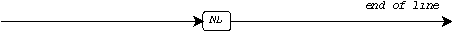
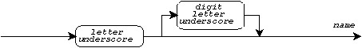
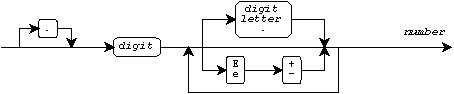
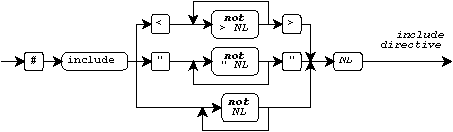
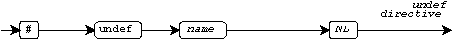
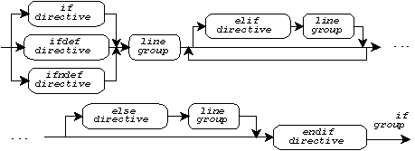
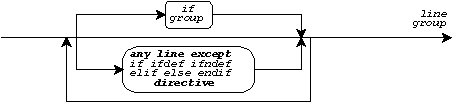
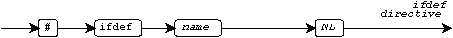
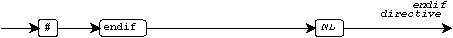

Phases of Translation · White Space · Preprocessing Tokens · Include Directives · Define Directives · Expanding Macros · Creating String Literals · Conditional Directives · Conditional Expressions · Restrictions on Conditional Expressions · Other Conditional Directives · Other Directives · Predefined Macros
The translator processes each source file in a series of phases. Preprocessing constitutes the earliest phases, which produce a translation unit. Preprocessing treats a source file as a sequence of text lines. You can specify directives and macros that insert, delete, and alter source text.
This document describes the operations that you can perform during preprocessing. It shows how the translator parses the program as white space and preprocessing tokens, carries out the directives that you specify, and expands the macros that you write in the source files.
Preprocessing translates each source file in a series of distinct phases. The translator performs the following steps, in order:
NL),
regardless of the external representation of a
text line
\) with the line following
/* that is not inside a
character constant, a
string literal, or a
standard header
name and ending with a */) with a
space character
The remainder of the translator then parses the resulting translation unit as one or more declarations and translates each one. At link time), you combine one or more separately processed translation units, along with the Standard C library, to form the program.
A translation unit can contain entire include files, which can contain entire if-groups, which can contain entire directives and macro invocations, which can contain entire comments, character constants, string literals, and other preprocessing tokens.
You cannot write a comment inside a string literal, as in:
"hello /* ignored */" comment is NOT ignored
You cannot write a macro to begin comments, as in:
#define BEGIN_NOTE /* still inside comment
You cannot include a source file that contains an if directive without a balancing endif directive within the same file. Nor can you include a source file that contains only part of a macro invocation.
You write a directive on one
logical line.
(Use line concatenation
to represent a long directive on multiple source lines.)
Every directive begins with a number character (#).
You can write any number of space
and HT characters (or comments)
before and after the #.
You cannot write FF or VT
characters to separate tokens on a directive line. Every
line that begins with a # must match one
of the forms described in this document.
Preprocessing parses each input line as preprocessing tokens and white space. You use white space for one or more purposes.
case 3:
#define neg_pi (-3.1415926535)
space in the string
literal, as in:
#define str(x) #x str(hello there) which becomes "hello there"
White space takes one of three distinct forms:
FF and VT),
which you can use within any non-directive line:
space and HT),
which you can use in any line:

NL), which you use
to terminate directives or to separate tokens on non-directive lines:

For a directive, you can write horizontal white space wherever an arrow appears in its railroad-track diagram.
A preprocessing token is the longest sequence of characters that matches one of the following patterns.
A name is a sequence of letters, underscores, and digits that begins with a letter or underscore. Distinct names must differ within the first 31 characters.

Some valid names, all of which are distinct, are:
abc Version13 old_sum ABC _Abc X1_Y2_Z3
A preprocessing number subsumes all integer and floating-point constants, plus a number of other forms:

Some valid preprocessing numbers are:
0 .123 3E 123 123E0F 3e+xy 123LU 0.123E-005 2for1
The third column shows several of the additional forms. You use the additional forms:
Some valid preprocessing numbers are:
314 3.14 .314E+1 0xa5 .14E+ 1z2z
A character constant
consists of one or more multibyte
characters enclosed in single quotes.
A backslash (\) within a character constant
begins an escape sequence.
To make a
wide-character constant,
precede the character constant with an L.

Some valid character constants are:
'a' '\n' L'x' 'abc' '\0' L'<$B0>'
A string literal
consists of zero or more
multibyte characters
enclosed in double quotes ("). To make a
wide-character string literal,
precede the string literal with an L:

Some valid string literals are:
"" "Good Night!\n" L"Kon ban wa" "abc" "\5hello\0Hello" L"exit is <$B0>"
The following table lists all valid operator or punctuator tokens. Tokens in the rightmost column are added by Amendment 1:
... && -= >= ~ + ; ] <:
<<= &= -> >> % , < ^ :>
>>= *= /= ^= & - = { <%
!= ++ << |= ( . > | %>
%= += <= || ) / ? } %:
## -- == ! * : [ # %:%:
Any character standing alone
other than one from the
basic C character set
forms a preprocessing token by itself. For example,
some other characters often found in character sets
are @ and $.
You use other characters for one of two purposes:
Thus, almost any form that you write will be recognized as a valid preprocessing token. Do not, however, write an unbalanced single or double quote alone on a source line and outside other enclosing quotes, as in:
#define str(x) #x char *name1 = str(O'Brien); INVALID char *name2 = "O'Brien"; valid
You include the contents of an include file -- a standard header or another source file -- in a translation unit by writing an include directive. The contents of the specified standard header or source file replace the include directive:

Following the directive name include, write one of the
following:
Some examples are:
#include <stdio.h> declare I/O functions #include "mydecs.h" and custom ones #include MACHDEFS MACHDEFS defined earlier
A standard header name:
>)
/*)
A filename:
")
/*)
For maximum portability, filenames should consist of from one
to six lowercase letters, followed by a dot (.), followed by
a lowercase letter. Some portable filenames are:
"salary.c" "defs.h" "test.x"
You define a macro by writing a
define directive.
Following the directive name define,
you write one of two forms:

Three examples are:
#define MIN_OFFSET (-17) no parameters #define quit() exit(0) zero parameters #define add(x, y) ((x) + (y)) two parameters
Write a define directive that defines a name currently defined as a macro only if you write it with the identical sequence of preprocessing tokens as before. Where white space is present in one definition, white space must be present in the other. (The white space need not be identical.)
To remove a macro definition, write an undef directive:

You might want to remove a macro definition so that you can define it differently with a define directive or to unmask any other meaning given to the name.
The name whose definition you want to remove follows the directive
name undef. If the name is not currently defined as a macro,
the undef directive has no effect.
Preprocessing expands macros in all non-directive lines and in parts of some directives that are not skipped as part of an if-group. In those places where macros are expanded, you invoke a macro by writing one of the two forms:
A macro argument consists of one or more preprocessing tokens. You must write parentheses only in balanced pairs within a macro argument. You must write commas only within these pairs of parentheses. For example, using the macros defined in the previous example, you can write:
if (MIN_OFFSET < x) invokes MIN_OFFSET
x = add(x, 3); invokes add
Following the name of a macro with parameters, you must write one macro argument for each parameter and you must write at least one preprocessing token for each macro argument. Following the name of a macro with parameters, you must not write any directives within the invocation and you must not write the invocation across more than one file. Following the name of a macro with parameters, you can write arbitrary white space before the left parenthesis and you can write the invocation across multiple source lines.
The translator expands a macro invocation by replacing the preprocessing tokens that constitute the invocation with a sequence of zero or more preprocessing tokens. It determines the replacement sequence in a series of steps. This example illustrates most of the steps:
#define sh(x) printf("n" #x "=%d, or %d\n",n##x,alt[x])
#define sub_z 26
sh(sub_z) macro invocation
The steps, in order, are:
printf("n" #x "=%d, or %d\n",n##x,alt[x])
# token
(or %: token, with
Amendment 1)
in the replacement list. The translator replaces
the # token and parameter name with a
created string literal
made from the corresponding (unexpanded) macro argument.
printf("n" "sub_z" "=%d, or %d\n",n##x,alt[x])
## token (or %:%: token, with
Amendment 1) in the replacement
list. If either token is a macro parameter name, the translator replaces
that name with the corresponding (unexpanded) macro argument. The
translator then replaces the ## token and its preceding and
following tokens with a single preprocessing token that is the
concatenation
of the preceding and following tokens. The result must be a valid
preprocessing token.
printf("n" "sub_z" "=%d, or %d\n",nsub_z,alt[x])
printf("n" "sub_z" "=%d, or %d\n",nsub_z,alt[26])
sh in the example) while it rescans
the replacement list to detect macro invocations
in the original replacement list or that it may have constructed
as a result of any of these replacements. The replacement list can
provide the beginning of an invocation of a macro with parameters,
with the remainder of the invocation consisting of preprocessing tokens
following the invocation.
In the example shown, no further expansion occurs. After string literal concatenation, the resulting text is:
printf("nsub_z=%d, or %d\n",nsub_z,alt[26])
You can take advantage of rescanning by writing macros such as:
#define add(x, y) ((x) + (y))
#define sub(x, y) ((x) - (y))
#define math(op, a, b) op(a, b)
math(add, c+3, d) becomes ((c+3) + (d))
The translator creates a
string literal from a
macro argument
(when its corresponding
macro parameter
follows a # token in the macro definition)
by performing the following steps, in order:
\ before each \ and "
within a
character constant
or string literal.
space character.
For example:
#define show(x) printf(#x "= %d\n", x)
show(a +/* same as space */-1);
becomes:
printf("a + -1= %d\n", a + -1);
You can also create a wide-character string literal:
#define wcsl(x) L ## #x
wcsl(arigato) becomes L"arigato"
You can selectively skip groups of lines within source files by writing conditional directives. The conditional directives within a source file form zero or more if-groups:

Within an if-group, you write conditional directives to bracket one or more groups of lines, or line-groups:

The translator retains no more than one line-group within an if-group. It skips all other line-groups. An if-group has the following general form:
A line-group is zero or more occurrences of either an if-group or any line other than an if, ifdef, ifndef, elif, else, or endif directive. The translator retains no more than one alternative line-group:
For example, to retain a line-group in a header file at most once, regardless of the number of times the header is included:
#ifndef _SEEN #define _SEEN /* body of header */ #endif
And to retain only one of three line-groups, depending on the
value of the macro MACHINE defined earlier in the translation
unit:
#if MACHINE == 68000
int x;
#elif MACHINE == 8086
long x;
#else /* all others */
#error UNKNOWN TARGET MACHINE
#endif
For an
if directive (or an
elif directive),
you write a
conditional expression
following the directive name if:

If the expression you write has a nonzero value, then the translator retains as part of the translation unit the line-group immediately following the if directive. Otherwise, the translator skips this line-group. The translator evaluates the expression you write by performing the following steps. This example illustrates most of the steps, in order:
#define VERSION 2 #if defined x || y || VERSION < 3
defined,
followed by another name or by another name enclosed in parentheses.
The replacement is 1 if the second name is defined as a macro;
otherwise, the replacement is 0.
#if 0 || y || VERSION < 3
#if 0 || y || 2 < 3
0.
#if 0 || 0 || 2 < 3
#if 1
Thus, in this example, the translator retains the line-group following the if directive.
In the expression part of an if directive, you write only integer constant expressions, with the following additional considerations:
To determine the properties of the target environment by writing
if directives,
test the values of the macros defined in
<limits.h>.
The ifdef directive tests whether a macro name is defined:

The directive:
#ifdef xyz
is equivalent to:
#if defined xyz
The ifndef directive tests whether a macro name is not defined:

The directive:
#ifndef xyz
is equivalent to:
#if !defined xyz
You can provide an alternative line-group within an if-group by writing an elif directive:

Following the directive name elif,
you write an expression just as for an
if directive.
The translator retains the alternative
line-group following the elif directive if the expression is
true and if no earlier line-group has been retained
in the same if-group.
You can also provide a last alternative line-group by writing an else directive:

You terminate the last alternative line-group within an if-group by writing an endif directive:

You alter the source
line number and
filename by writing a
line directive.
The translator uses the line number and filename
to alter the values of the predefined macros
__FILE__ and
__LINE__:

Following the directive name line, write one of the following:
You generate an unconditional diagnostic message by writing an error directive:

Following the directive name error, write any text
that the translator can parse as preprocessing tokens. The translator
writes a diagnostic message that includes this sequence of preprocessing
tokens. For example:
#if !defined VERSION #error You failed to specify a VERSION #endif
You convey additional information to the translator by writing a pragma directive:

Following the directive name pragma, write any text
that the translator can parse as preprocessing tokens. Each translator
interprets this sequence of preprocessing tokens in its own way and
ignores those pragma directives that it does not understand.
You introduce comments or additional white space into the program by writing a null directive:

The null directive is the only directive that does not
have a directive name following the # token. For example:
# # /* this part for testing only */ valid #define comment /* comment only */ # # comment INVALID
The translator predefines several macro names.
The macro
__DATE__
expands to a string literal that gives
the date you invoked the translator.
Its format is "Mmm dd yyyy".
The month name Mmm is the same as for dates
generated by the library function
asctime.
The day part dd ranges from " 1" to "31" (a leading 0
becomes a space).
The macro
__FILE__
expands to a string literal that gives the remembered
filename
of the current source file. You can alter
the remembered filename by writing a
line directive.
The macro
__LINE__
expands to a decimal integer constant that gives the remembered
line number
within the current source file.
You can alter the remembered line number by writing a
line directive.
The macro
__STDC__
expands to the decimal integer constant 1.
The translator should provide another value (or leave the
macro undefined) when you invoke it for other than a Standard C environment.
For example, you can write:
#if __STDC__ != 1 #error NOT a Standard C environment #endif
The macro
__STDC_VERSION__
expands to the decimal integer constant 199409L.
The translator should provide another value
(or leave the macro undefined) when you invoke it for other than a
Standard C environment that incorporates
Amendment 1.
The macro
__TIME__
expands to a string literal that gives
the time you invoked the translator. Its format is "hh:mm:ss",
which is the same as for times generated by the library function
asctime.
You cannot write these macro names, or the name
defined, in an
undef directive.
Nor can you redefine these names with a
define directive.
See also the Table of Contents and the Index.
Copyright © 1989-1996 by P.J. Plauger and Jim Brodie. All rights reserved.